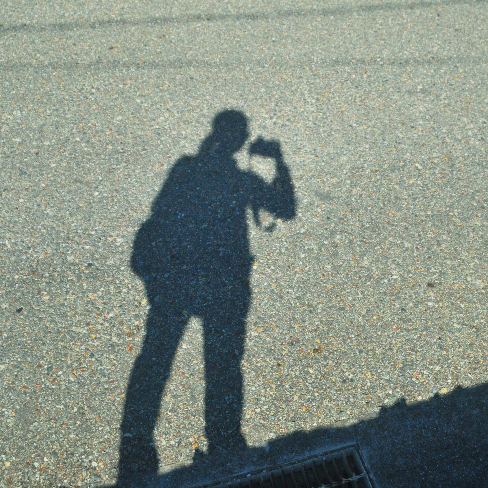
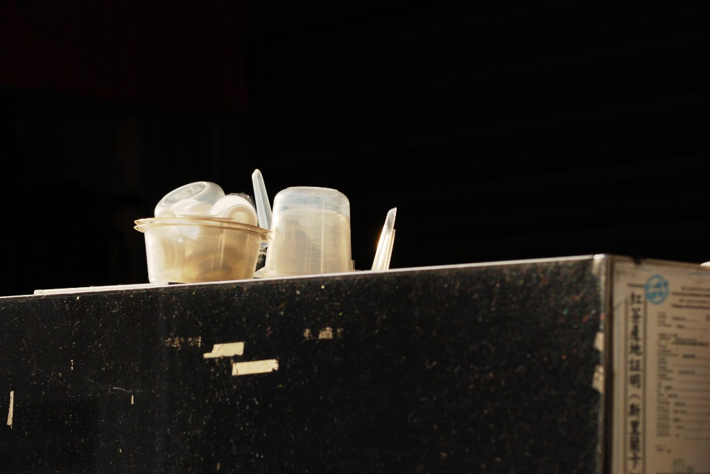
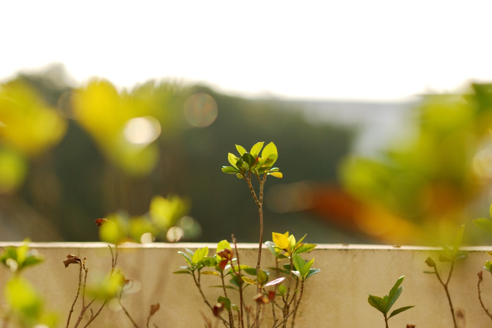
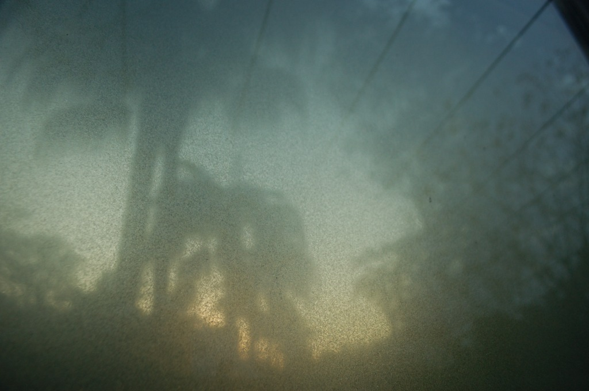
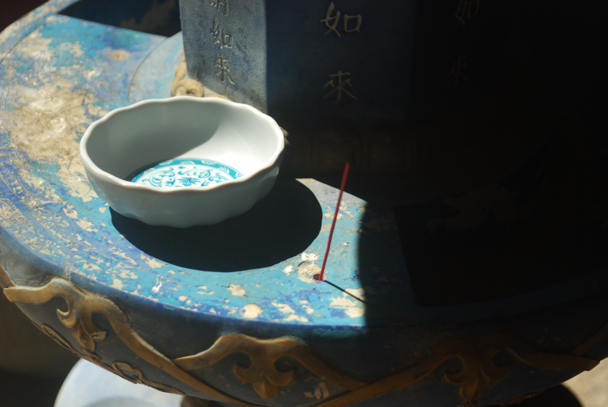
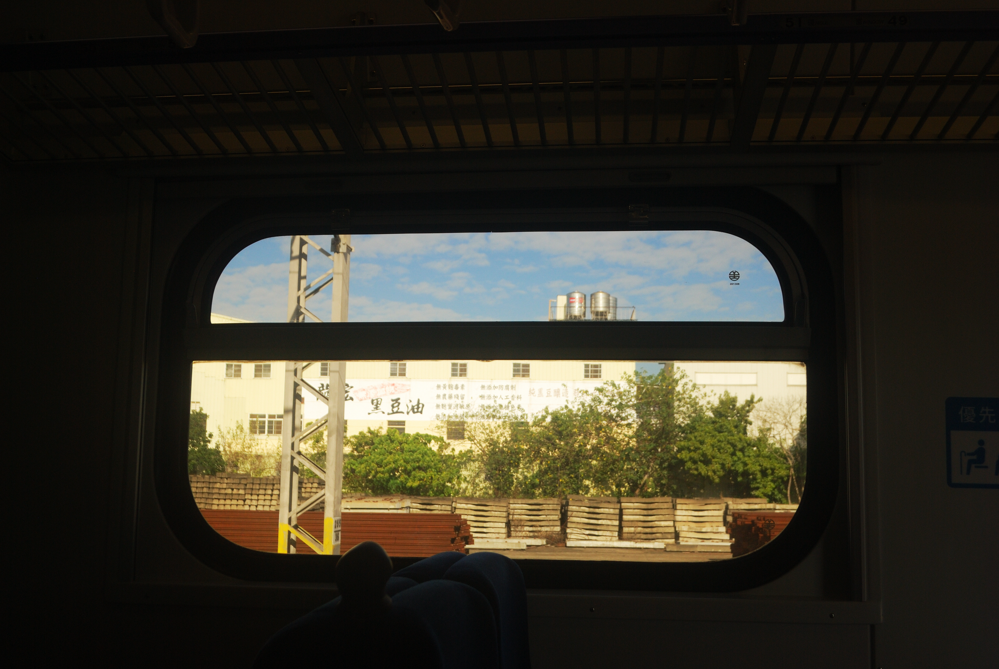
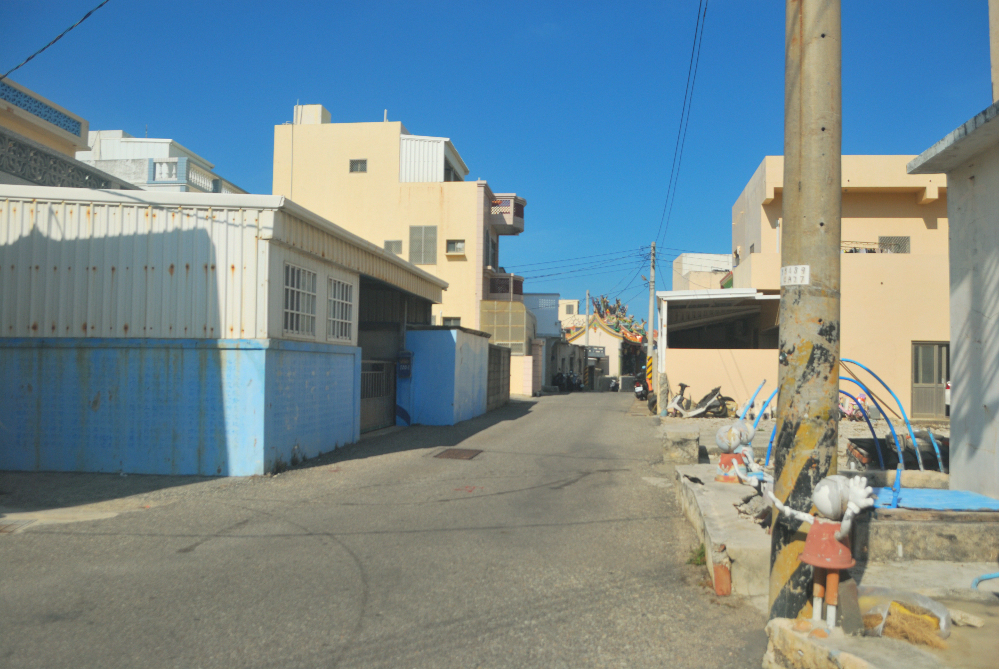
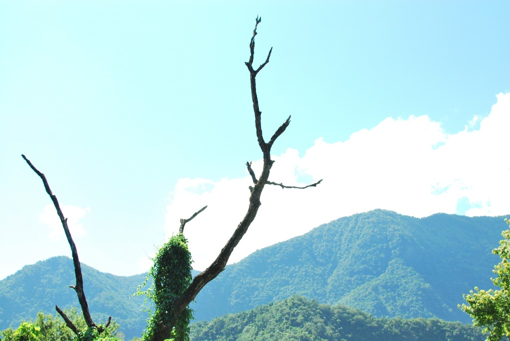

Cherry Blossom

Documenting daily light, quiet alleys, and understated foliage. Focusing on natural stillness, muted tones, and unhurried observation.







I am an amateur photographer documenting fragments of everyday surroundings. I am drawn to muted colors, honest lighting, and quiet corners that usually pass unnoticed.
All images are personal snapshots taken during daily walks and travels, captured with natural ambient light.